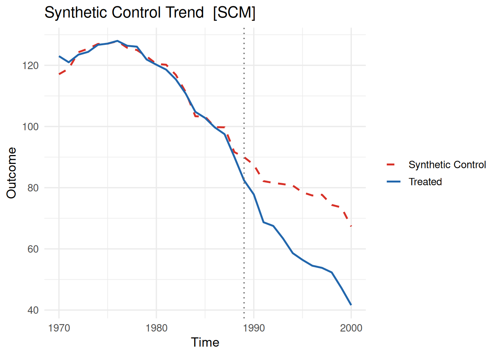
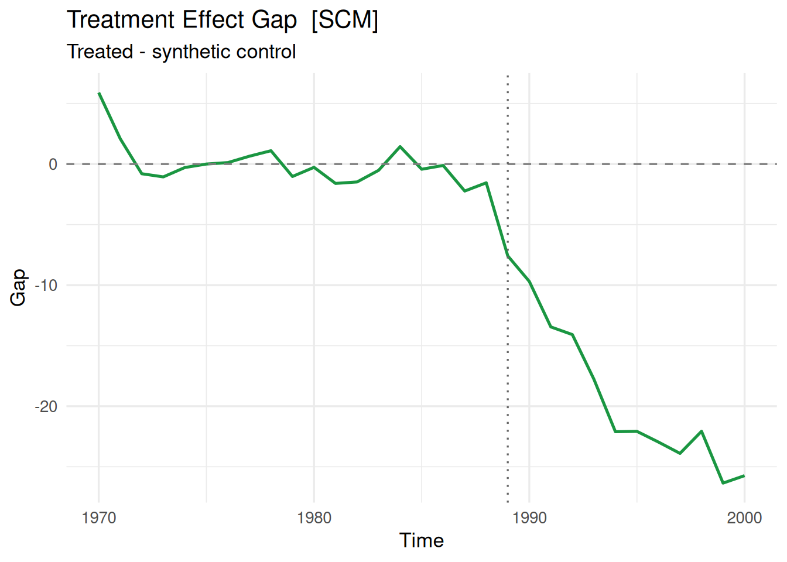
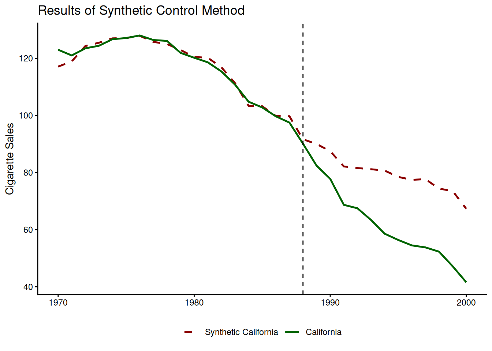
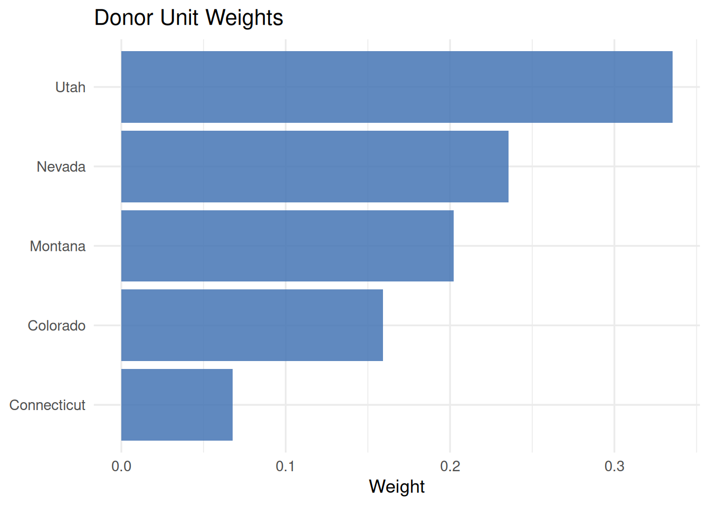
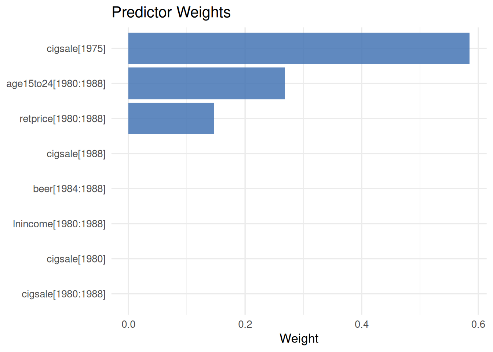
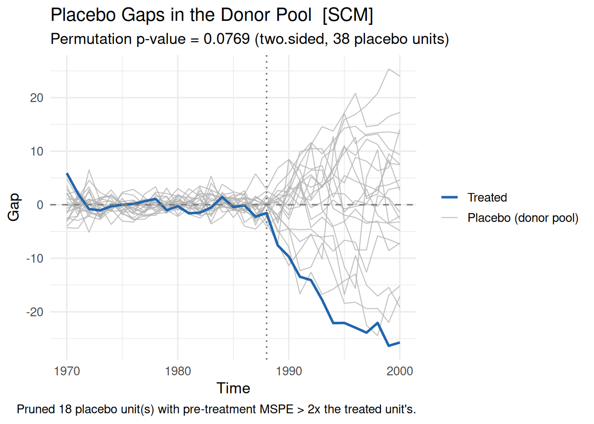

library(coresynth)


はじめに
合成コントロール法を実装するためのRパッケージであるcoresynthですが、パッケージの紹介ページでは、複数の手法に対応していることもあり、合成コントロール法に絞った使い方の説明が少し分かりにくいかもしれません。そこで本ページでは、合成コントロール法に絞って使い方を説明します。
パッケージの簡単な説明
念のため本パッケージを簡単に説明すると、coresynth合成コントロール法を爆速で実装するためのRパッケージです。
数か月前から開発を進めており、現在はCRANにも公開されています。
C++という言語が裏で動いているため、純粋なR実装よりも高速に計算できます。特に、ドナー数が多い場合や、プラセボテストまで実施する場合に力を発揮します。
一般的にはSynthパッケージが有名ですが、先日実際に使う機会があったので速度比較をしたところ、Synthでの計算（プラセボテスト込み）で18秒程度かかったものが、coresynthでは0.2秒程度で計算できました（速度差は分析内容によります）。
また、個人開発ということで精度が心配かもしれませんが、開発の過程でSynthをはじめとした既存のパッケージとの比較を多角的に行っており、精度面でも問題ないことを確認しています1。
パッケージの準備
# CRANからインストール
pak::pak("coresynth")
# GitHubからインストール（開発版）
pak::pak("yo5uke/coresynth")今回は比較対象としてSynthをより使いやすくしたtidysynthパッケージも使います。
library(tidysynth)データの準備
データはtidysynthパッケージに付属しているsmokingデータを使います。これは合成コントロール法ではおなじみカリフォルニアのProposition 99に関するデータです2。
data("smoking", package = "tidysynth")| state | year | cigsale | lnincome | beer | age15to24 | retprice |
|---|---|---|---|---|---|---|
| Rhode Island | 1970 | 123.9 | NA | NA | 0.1831579 | 39.3 |
| Tennessee | 1970 | 99.8 | NA | NA | 0.1780438 | 39.9 |
| Indiana | 1970 | 134.6 | NA | NA | 0.1765159 | 30.6 |
| Nevada | 1970 | 189.5 | NA | NA | 0.1615542 | 38.9 |
| Louisiana | 1970 | 115.9 | NA | NA | 0.1851852 | 34.3 |
| Oklahoma | 1970 | 108.4 | NA | NA | 0.1754592 | 38.4 |
実装してみる
coresynthパッケージでは複数の手法に対応しているのですが、それらはすべてscm_fit()という関数で統一的に呼び出すことができます。method引数で手法を指定することで、合成コントロール法（SCM）や合成差の差法（SDID）などを実行できます。今回は合成コントロール法を実行するので、method = "scm"と指定します。
処置変数を作る
scm_fit()では、処置ユニットかつ処置後について1の値をとる二値変数を作る必要があります。
library(dplyr)
smoking <- smoking |>
mutate(
treated = if_else(state == "California" & year >= 1989, 1L, 0L)
)実装する
実行速度も図るために、tictocで計算時間を計測してみます。
scm_fit()自体はプラセボテストまでは行わないので、詳しくは後ほど書きますが、プラセボテストの関数まで一気に実行します。
tictoc::tic()
core_fit <- scm_fit(
cigsale ~ treated | state + year,
data = smoking,
method = "scm",
predictors = list(
pred(c("lnincome", "retprice", "age15to24"), 1980:1988),
pred("cigsale", 1980:1988),
pred("beer", 1984:1988),
pred("cigsale", 1975),
pred("cigsale", 1980),
pred("cigsale", 1988)
)
)
core_placebo <- mspe_ratio_pval(core_fit) # プラセボも計算
tictoc::toc()3.352 sec elapsed第1引数のフォーミュラですが、アウトカム ~ 処置変数 | ユニット変数 + 時間変数の形で指定します。処置変数は上で作ったtreatedを指します。ユニット変数は今回state、時間変数は今回はyearです。Two-way fixed effectsと同じような指定のイメージですね。
predictors引数では、予測変数を指定します。list形式で複数の予測変数を指定でき、pred()関数で予測変数名と期間を指定します。
tidysynthパッケージでの実装も同様に計測してみます。コードが長く今回の本題でもないので折りたたんでおきます。
コード
tictoc::tic()
smoking_out <- smoking |>
synthetic_control(
outcome = cigsale,
unit = state,
time = year,
i_unit = "California",
i_time = 1988,
generate_placebos = TRUE # プラセボも計算
) |>
generate_predictor(
time_window = 1980:1988,
ln_income = mean(lnincome, na.rm = TRUE),
ret_price = mean(retprice, na.rm = TRUE),
youth = mean(age15to24, na.rm = TRUE)
) |>
generate_predictor(
time_window = 1980:1988,
ln_cigsale = mean(cigsale, na.rm = TRUE)
) |>
generate_predictor(
time_window = 1984:1988,
beer_sales = mean(beer, na.rm = TRUE)
) |>
generate_predictor(
time_window = 1975,
cigsale_1975 = cigsale
) |>
generate_predictor(
time_window = 1980,
cigsale_1980 = cigsale
) |>
generate_predictor(
time_window = 1988,
cigsale_1988 = cigsale
) |>
generate_weights(
optimization_window = 1970:1988,
margin_ipop = .02,
sigf_ipop = 7,
bound_ipop = 6
) |>
generate_control()
tictoc::toc()20.571 sec elapsed細かい仕様についてはtidysynthのGitHubリポジトリを参照してください。
概ねcoresynthが3秒程度、tidysynthが15～20秒程度で計算できました（環境によって時間に数秒程度の幅は生じます）。
冒頭で0.2秒程度と書いたのですが、その分析では予測変数として期間前におけるアウトカム平均のみを使っていたため、計算が速くなっていました。予測変数が増えると、その分時間がかかります。
ただ、複数のモデルでプラセボテストまで行いたい場合もあると思いますので、この差は無視できないのではないかと考えています（毎回20秒で何回も回すのストレスですしね…。それがcoresynth開発のモチベーションでもあります）。
Tip時間変数の指定の仕方
pred()関数の第2引数には、期間をベクトルで指定します。年のような変数であれば1980:1988のように指定できますが、月次のデータなどの場合は、seq()関数を使って期間を指定する必要があります。
# 月次データの場合の例
seq(as.Date("2020-01-01"), as.Date("2020-12-01"), by = "month")逐一as.Date()するのが冗長という場合には、あらかじめ開始時点と終了時点を格納しておいてもよいかと思います。
START <- as.Date("2020-01-01")
END <- as.Date("2020-12-01")
seq(START, END, by = "month")プロットについて
プロットは、plot()関数で簡単に描画できます。
plot(core_fit, type = "trend")
処置ユニットと合成コントロールの推移を確認できます。type = "trend"はデフォルトなので、type引数を省略しても同じ結果が得られます。
plot(core_fit, type = "gap")
処置ユニットと合成コントロールの差を確認できます。
引数も豊富に用意してあり、加えてggplot2ベースのグラフであるためカスタマイズも容易です。
library(ggplot2)
plot(
core_fit,
colors = c(treated = "darkgreen", synthetic = "darkred"),
labels = c(treated = "California", synthetic = "Synthetic California"),
vline = list(linetype = "dashed", color = "black"),
vline_offset = -1
) +
labs(
title = "Results of Synthetic Control Method",
x = NULL,
y = "Cigarette Sales"
) +
theme_classic() +
theme(legend.position = "bottom")
大体引数名で察しが付くかとは思いますが、colorsで線の色、labelsで凡例のラベルを指定できます。vlineで縦線の種類や色を指定でき、vline_offsetで縦線の位置を調整できます3。
結果の詳細について
合成コントロール法では、合成コントロールがどのように構成されているかが重要です。core_fitオブジェクトに対してsummary()関数を実行することで、合成コントロールの構成比率や予測変数のバランスなどを確認できます。
summary(core_fit)=== coresynth summary ===
Method : SCM
Periods : T_pre = 19 | T_post = 12
ATT estimate: -18.97965
Unit weights (non-zero donors):
Colorado Connecticut Montana Nevada Utah
0.1590 0.0677 0.2022 0.2357 0.3353
Predictor balance:
predictor treated synthetic
lnincome[1980:1988] 10.0766 9.8583
retprice[1980:1988] 89.4222 89.4222
age15to24[1980:1988] 0.1735 0.1735
cigsale[1980:1988] 106.6556 107.4008
beer[1984:1988] 24.2800 24.2237
cigsale[1975] 127.1000 127.1000
cigsale[1980] 120.2000 120.4667
cigsale[1988] 90.1000 91.6480また、ウェイトはプロットでも確認できます。weightsは合成コントロールの構成比率、pred_weightsは予測変数のウェイトを確認できます。
plot(core_fit, type = "weights")
plot(core_fit, type = "pred_weights")

プロットはデータから自分でしたいんだという皆様には、plot_data()関数を準備していますので、そちらを使うとデータフレーム形式で取得できます。データの中身をいじって表示を変えたい場合などに便利です。
plot_data(core_fit, type = "trend") |>
head() time value series
1 1970 123.0 Treated
2 1971 121.0 Treated
3 1972 123.5 Treated
4 1973 124.4 Treated
5 1974 126.7 Treated
6 1975 127.1 Treated今はデータの先頭だけ見せているのでTreatedの系列しか見えていませんが、series列にはTreatedとSynthetic Controlの2系列が格納されています。
plot_data(core_fit, type = "weights") |>
arrange(desc(weight)) |>
head() unit weight
1 Utah 0.33525118
2 Nevada 0.23572876
3 Montana 0.20224658
4 Colorado 0.15904083
5 Connecticut 0.06773264
6 Alabama 0.00000000引数のtypeで、weightsやpred_weightsなどを指定できます。これはplot()関数のtype引数と同じです。
プラセボテストについて
合成コントロール法では、プラセボテストを実施して推論を行うのが一般的かと思います。coresynthパッケージでは、mspe_ratio_pval()関数でプラセボテストを実施できます。
core_placebo <- mspe_ratio_pval(core_fit)合成コントロール法の実行結果であるcore_fitに対してmspe_ratio_pval()関数を実行することで、プラセボテストの結果が返ってきます。
正確 \(p\) 値の確認は、core_placebo$p_valueで行えます。
core_placebo$p_value[1] 0.07692308
Note既存パッケージとの結果の相違について
合成コントロール法における \(p\) 値についてはMixtape等を参照していただきたいのですが、本パッケージと既存パッケージであるSynthやtidysynthでは、計算アルゴリズムが若干異なるため、結果が微妙に異なる場合があります（既に今回の \(p\) 値も異なっています）。
合成コントロール法では「どの説明変数をどれだけ重視するか」という重み（V）を試行錯誤で決めますが、この探索には無数の候補があり、パッケージによって辿り着く解が変わることがあります。coresynthは多数の出発点から探索する仕組みを備えており、Proposition 99 の分析例では、tidysynth4よりも当てはまりの良い重みを、より高速に見つけます。数値の違いは誤差や不具合ではなく、より良い解を見つけた結果です。
一応本パッケージでは精度で見るとSynthやtidysynthよりも優れているということになるのですが、どちらの結果でも誤りではない以上、パッケージによって結果が異なってしまうと統一的な解釈ができない5ため、プラセボテストはやや信頼性に欠ける側面があると思います。
プラセボを含めた合成コントロールとのギャップのプロットは、以下の方法で実行できます。
plot(core_placebo, type = "gaps")
プラセボの結果を格納したcore_placeboオブジェクトに対して、plot(~, type = "gaps")とすることで、プラセボを含めたギャップのプロットが描画できます。
Abadie et al. (2010) では、MSPEが処置ユニットの一定倍以上のドナーは除外してプロットすることが推奨されています。mspe_prune引数で、MSPEが処置ユニットのMSPEの何倍以上のドナーを除外するかを指定できます。
plot(core_placebo, type = "gaps", vline_offset = -1, mspe_prune = 2)mspe_prune引数で、MSPEが処置ユニットのMSPEの何倍以上のドナーを除外するかを指定できます。デフォルトでは除外はしていませんので、適宜設定してください。
おまけ
処置ユニットと合成コントロールの数値データ取得
処置ユニットの系列と合成コントロールの系列をそれぞれ数値で取得できます。
treated_outcomes(core_fit) [1] 123.0 121.0 123.5 124.4 126.7 127.1 128.0 126.4 126.1 121.9 120.2 118.6
[13] 115.4 110.8 104.8 102.8 99.7 97.5 90.1 82.4 77.8 68.7 67.5 63.4
[25] 58.6 56.4 54.5 53.8 52.3 47.2 41.6synthetic_outcomes(core_fit) [1] 117.09559 118.90752 124.29764 125.45638 126.98630 127.09997 127.87660
[8] 125.75039 124.99970 122.92340 120.46667 120.19307 116.87205 111.31190
[15] 103.35216 103.22287 99.81240 99.72829 91.64805 89.98670 87.49596
[22] 82.14675 81.58251 81.16527 80.70269 78.47470 77.46081 77.69564
[29] 74.36785 73.54654 67.33035データフレーム形式での取得
broomパッケージと組み合わせると、coresynthの結果をデータフレーム形式で取得できます。
fit_df <- broom::augment(core_fit)
head(fit_df) .time .observed .fitted .resid .treated .period
1 1970 123.0 117.0956 5.904415e+00 FALSE pre
2 1971 121.0 118.9075 2.092479e+00 FALSE pre
3 1972 123.5 124.2976 -7.976368e-01 FALSE pre
4 1973 124.4 125.4564 -1.056377e+00 FALSE pre
5 1974 126.7 126.9863 -2.862995e-01 FALSE pre
6 1975 127.1 127.1000 2.904875e-05 FALSE pre処置前・処置後の判別もできるようになっています。系列の差を取りたいときなどはこちらから使ってみてください。
まとめ
今回は合成コントロール法に絞って主要な使い方を説明しました。
coresynthパッケージは精度を維持しつつなるべく高速化するように作られています。そのうえで基本的な分析やプロットを網羅できるように日々改善を続けていますので、もし分析の機会があれば使ってみていただけると嬉しいです。
もし不具合や改善点などがあれば、GitHubのリポジトリにIssueを立てていただけると助かります。
もしくは、下のコメント欄からお願いします！
参考文献
Abadie, Alberto, Alexis Diamond, and Jens Hainmueller. 2010. "Synthetic Control Methods for Comparative Case Studies: Estimating the Effect of California’s Tobacco Control Program". Journal of the American Statistical Association 105 (490): 493–505. https://doi.org/10.1198/jasa.2009.ap08746.